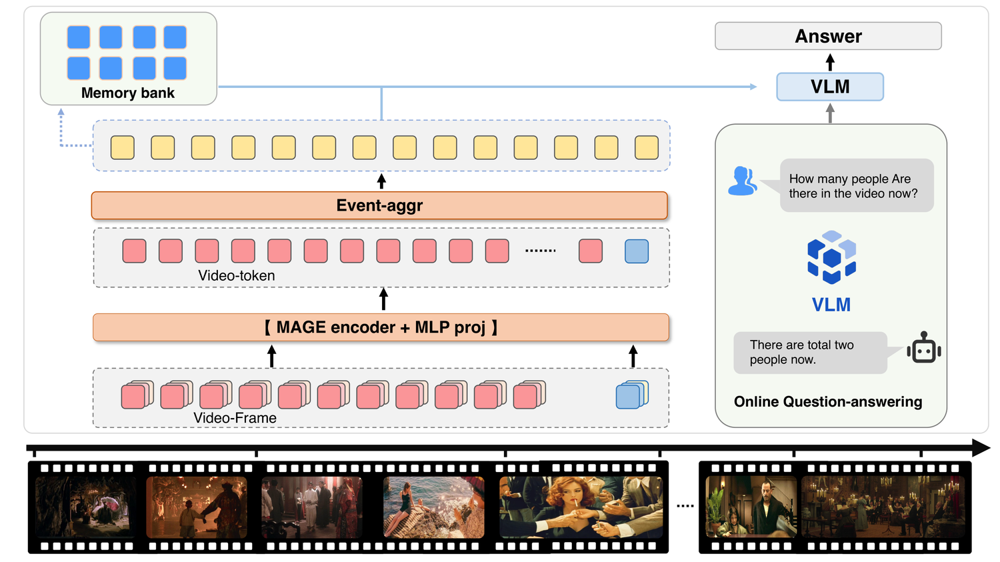

把「何时调用 VLM、何时写记忆」统一交给事件边界，可在严格因果的流式设定下把长视频理解压到 0.1 s/token 以内；代价是记忆只剩事件级嵌入，细节不可回放。
- 最小可复用件
- 三线索打分 + 迟滞间隔的事件触发调度器，连同 merge-or-append 写入规则
- 主要风险
- 边界由手工权重与阈值决定，迁到机器人域后误触发会直接变成错误记忆写入
- 复现门槛
- 单张 RTX 6000 Ada 可跑到约 17 FPS；但多数融合权重与合并阈值未公布，需自行标定
1. 核心摘要
长视频流上的 VLM 有两个对称的失效：固定间隔解码在静止片段里重复生成，缓存剪枝又在状态切换时丢掉关键上下文。Event-VStream 把连续视频切成离散、语义连贯的事件，用运动、语义漂移与一步预测误差三路线索打分，超过自适应阈值即判定状态转移；只有边界到来才调用语言模型并写入持久记忆。记忆不是原始帧、KV cache 或文本摘要，而是 L2 归一化的事件级视觉嵌入，按 merge-or-append 规则合并冗余事件。原文报告 OVOBench-Realtime 28.15 分，较 VideoLLM-Online-8B 高 10.4 分；两小时 Ego4D 流上维持约 70% 的 GPT-5 胜率，全程 sub-0.1 s/token。判定：这是目前最接近「事件驱动记忆写入」完整闭环的流式 VLM 参考实现，但它的记忆服务描述与问答，不服务动作。
2. 事件流水线定位
本工作把「记忆写入」做成主循环的一等公民，「语义确认」只作为三路打分中的一项参与边界判定。上游假设已有逐帧视觉编码器，下游假设存在可按嵌入检索的事件库，因此它不解决边界标注，而是解决边界出现之后如何压缩并留存。
| 环节 | 内容 |
|---|---|
| 输入 | 连续视频帧与逐帧视觉嵌入 f_t（L2 归一化），不使用未来帧 |
| 输出 | 事件 token E_k、事件库 M、边界处的语言输出 y_k |
| 交给下游 | 归一化事件嵌入序列与检索接口 Retrieve(M, E_k) |
3. 问题与动机
固定间隔采样的问题不是「帧太多」，而是采样点与状态变化无关：擦桌子的二十帧被均匀取样，白付解码成本；拿起杯子的两帧若落在采样间隔之间，则被整段丢掉，后续问答再也找不到这个状态。缓存剪枝路线把「保留多少 token」当成预算问题，但淘汰判据是注意力分数或时间距离，无法区分「低显著但不可替代」的上下文，例如任务开始时指定的目标物体，往往在被剪掉之后才被问到。
作者的另一条观察是时序错位：运动尖峰比语义漂移早约 2 s 出现。只看语义会晚，等它触发时状态已切换完毕；只看运动又会把同一事件内部的剧烈动作切碎。这两点共同决定了两个设计选择：必须多线索融合，且生成与写记忆只能发生在边界。
4. 方法拆解

图 2：事件驱动的流式推理主循环。原图 PDF 见 figures/fig2_architecture.pdf（对应作者 LaTeX 源码 figs/Figure2_main.pdf）。
4.1 输入与时间表征
逐帧视觉编码 f_t = Enc_v(x_t)，所有嵌入做 L2 归一化。当前事件用一个运行表示 f̄ 概括，按指数滑动平均更新：f̄ ← (1-ρ)f̄ + ρf_t。因此「当前事件」是历史嵌入的指数加权摘要，旧帧影响随 ρ 衰减，而不是固定窗口平均。这一形式决定了它的内存是常数级的，也让回看只可能发生在事件库层面。
4.2 关键机制
边界打分把三路信号线性组合后过 sigmoid：E_t = w_sem(1-s_t) + w_mot·ñ_t + w_pred·c_t，p_t = σ(E_t)，b_t = 1[p_t > τ_t]。语义项 s_t = cos(f_t, f̄) 确认表示层面的真实转移，并压掉瞬时运动噪声；运动项取平均光流范数或帧差能量，滑窗 min-max 归一化为 ñ_t，负责提前预警；预测项 ĉ_t = ||g_θ(f_{t-1}) - f_t||² 用一个三层 MLP 估计「新帧还能否被当前状态解释」，该 MLP 以 next-embedding 自监督训练后冻结，只用前一帧，因此不窥视未来。
阈值自适应于近期运动方差：τ_t = τ_0(1 + η·Var(m_{t-w:t}))，原文给出的取值为 τ_0 = 0.96、η = 0.03；画面抖动大时抬高门槛，避免把相机晃动当成事件。另有迟滞策略：距上一边界不足 Δ_min 的候选并入当前事件，超过 Δ_max 仍无边界的则发一次 keep-alive 更新，防止长时间沉默。
边界触发后按顺序做三件事。把段内帧嵌入按时间衰减权重池化为事件 token：E_k = Σ w_i f_i / Σ w_i，w_i ∝ exp(-|t_i - t_b|/σ)；用 merge-or-append 更新记忆库，若 cos(E_k, E_last) > γ_mem 则 E_last ← (1-λ)E_last + λE_k，否则追加新槽位；最后执行 y_k = LM(E_k, Retrieve(M, E_k))。非边界帧只更新 f̄，不产生任何文本。
4.3 输出与在线边界
设定是严格因果的：单向前向，不使用未来帧，预测器也只回看一帧。允许回看已压缩记忆，但检索对象是事件嵌入而非原始帧，被合并掉的信息无法恢复。记忆没有显式的容量上限与淘汰规则，控制增长的只有事件级抽象与 merge-or-append 合并；原文未报告 γ_mem、λ、ρ 与三路融合权重的取值，这是复现的主要不确定项。
延迟方面，全程维持 sub-0.1 s/token，多数 token 落在 0.05–0.08 s，两小时流上无明显漂移，单张 RTX 6000 Ada 上约 17 FPS；对照 Flash-VStream 稳态为 0.03–0.04 s，VideoLLM-Online 贴近 0.1 s 且在效率测试中约 300 s 后 OOM。显存占用的绝对值（GB）未在已核验的公开材料中确认。
5. 证据与实验
主结果在 OVOBench-Realtime 上（Table 1）：本方法 2 fps 解码得 28.15，VideoLLM-Online-8B 同为 2 fps 得 17.73，差值即摘要所称的 +10.4；Flash-VStream-7B 以 1 fps 得 28.37，本方法仅低 0.83 分，且只用了通用 LLaMA-3-8B 文本骨干。长时程在 Ego4D 两小时流上以 GPT-5 胜率评估，约 70%，末段最高 88.3%。
| 消融（Table 2） | 字幕胜率 % | 时延 s |
|---|---|---|
| 完整模型 | 68.1 | 0.093 |
| 去运动线索 | 11.8 | 0.190 |
| 去语义线索 | 37.5 | 0.173 |
| 去预测线索 | 46.7 | 0.187 |
三路线索缺任一项都会同时损失胜率与延迟，其中去运动项降幅最大，说明早于语义的预警信号承担了主要候选生成职责。需要留意，正文称「去语义项跌幅最大」，与表中去运动项的 11.8 不一致，两者统计口径可能不同，引用前应回原表脚注核对。这些数字只支持「事件调度对实时视频理解有效」，不构成边界检测 F1，也不构成机器人任务成功率；GPT-5 胜率是模型评审，与标注指标不可互换。
6. 优点、局限与 VLA 适配
可迁移
三线索打分、迟滞间隔与 merge-or-append 构成一个与骨干无关的调度层，可直接包在任意 VLA 视觉编码器外。EMA 运行表示与一步预测误差都是 O(d) 开销，不增加 VLM 调用次数，这是它能压住延迟的根本原因。
不成立的前提
视频里的「语义事件」由镜头与物体运动定义，机器人任务的成功由接触、力与任务进度定义。论文的边界判据不含动作条件，也没有闭环反馈，边界判对不等于子任务完成。记忆只有视觉嵌入，缺本体状态与动作历史，无法直接支撑控制。
能否直接用于 VLA，取决于两个频率的差距。论文的 0.05–0.08 s/token 是每个输出 token 的延迟，一次边界解码通常要生成多个 token，实际触发周期在几百毫秒量级；而常见操作策略的控制周期是 10–50 ms（20–100 Hz），差一个数量级以上。因此 VLM 只能放在慢速语义层，不能进控制回路；调度器则应跑在控制频率上，用本体速度、夹爪开合与末端接触力替代光流、语义漂移与视觉预测误差，这三类信号比图像便宜且无镜头运动干扰。
最小可复用件是「事件触发调度器」而不是「摘要写入器」。调度器只依赖轻量特征与阈值，可以脱离 VLM 单独验证误触发率与漏触发率，改造成本低；摘要写入器的质量取决于嵌入空间与生成模型，一旦写错就污染后续检索，且它的收益只有在长时程任务上才显现。合理顺序是先固化调度器与写入接口，再替换摘要器。
7. 落地清单
- 用本体速度、夹爪开合与末端力构造三个低延迟线索，替换光流、语义漂移与视觉预测误差，先离线标定阈值与迟滞区间。
- 在同一视觉编码器上实现 EMA 运行事件表示与 merge-or-append 写入，记录每次写入的触发线索与相似度，便于回溯误写。
- 把调度器与 VLM 调用拆成两个频率，调度器跟随控制周期，VLM 只在边界触发，测量队列积压与最坏时延。
- 为事件库补上容量上限与淘汰规则（原文未给出），按任务阶段或时间衰减淘汰，并测长时程召回率。
- 在真实任务上同时报告边界 F1、误写率、任务成功率与端到端延迟，不要只用主观偏好评分。
来源：arXiv abs 页 https://arxiv.org/abs/2601.15655（v1，2026-01-22 提交）；HTML 全文 https://arxiv.org/html/2601.15655v1（§4.2 公式 1–4、§4.4 Algorithm 1 与迟滞策略、Table 1–2、§5.3.1 Figure 8 时延测试）。作者未公开代码仓库。
图像说明：figures/fig2_architecture.png 由作者 LaTeX 源码 Figure 2 原图渲染，原图 PDF 见 figures/fig2_architecture.pdf。
相关页面：Motion-Aware Self-Supervision · Hierarchical Event Memory · KEMO · 返回总站